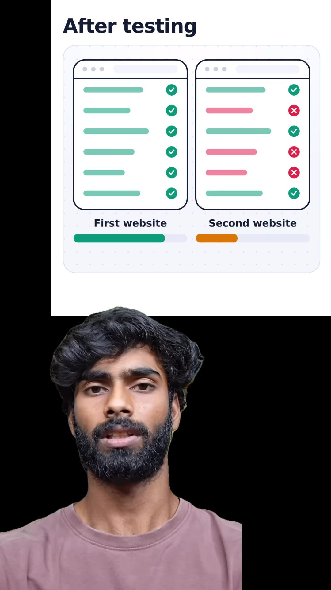
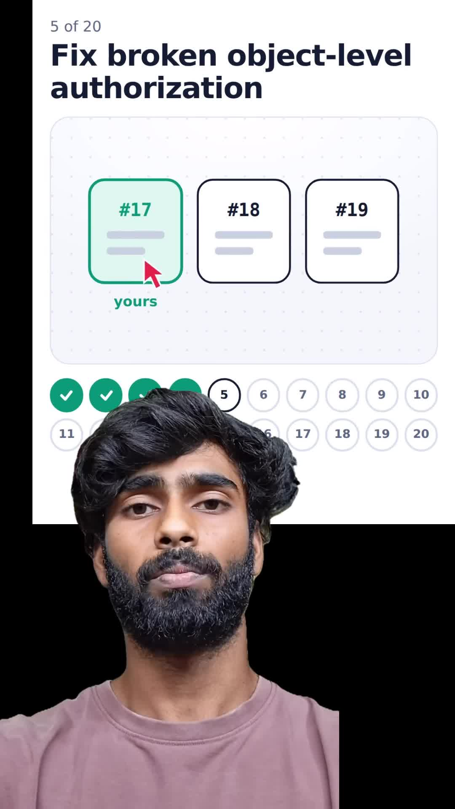
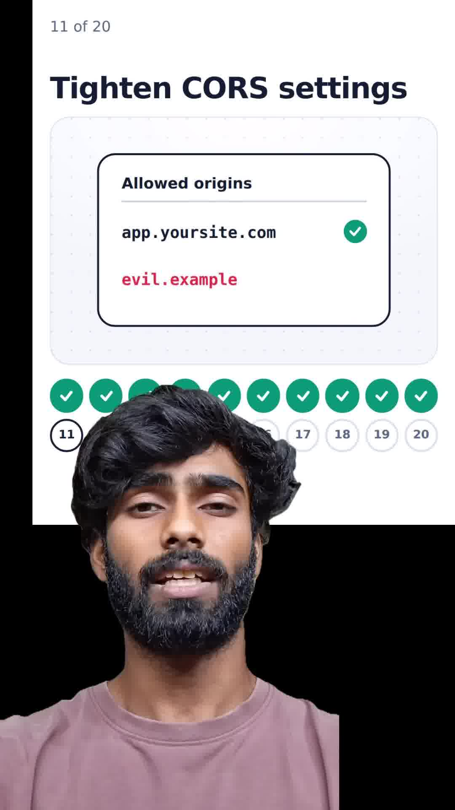
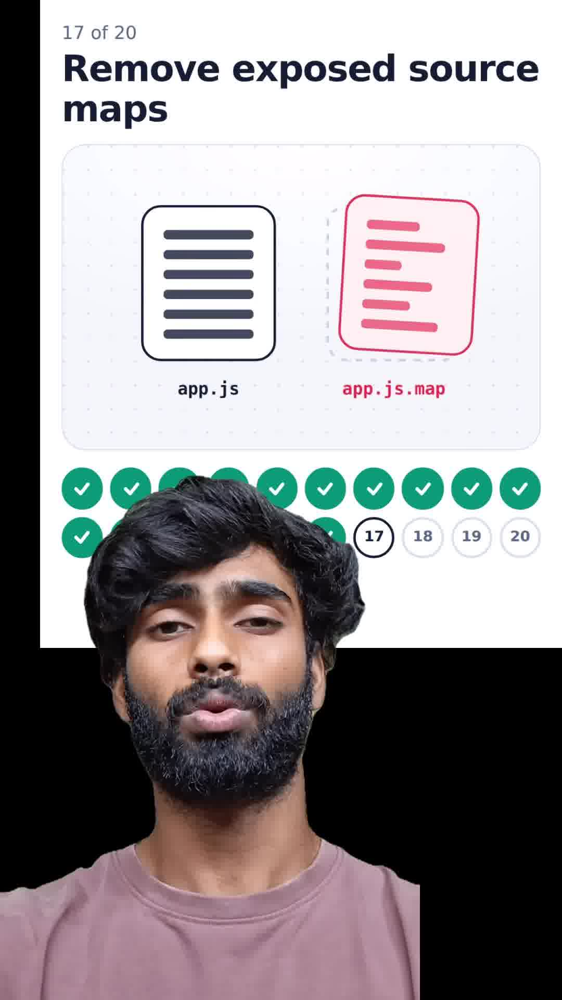

Executive Summary
When two developers build web applications using frontier coding agents (e.g. Claude 3.5 Sonnet vs OpenAI Codex), automated penetration testing often reveals that one application is impenetrable while the other suffers from severe vulnerabilities. The difference lies not in the underlying neural network weights, but in whether the engineer enforces a strict Production Security Hardening Policy on generated code.
AI coding models optimize for rapid feature completion and minimal syntax errors. Left unchecked, they routinely generate unvalidated database queries, leak client-side secrets, expose source maps in production builds, and omit server-side authorization checks. This guide provides the complete 20-point security audit checklist required prior to launching any AI-generated web application.
Core Visual Demonstrations




The 20-Point Production Hardening Checklist
| # | Vulnerability & Vector | The Common AI Mistake | Required Production Hardening |
|---|---|---|---|
| 1 | SQL Injection | Raw string interpolation inside SQL queries. | Use parameterized statements or ORM binding (Prisma, Drizzle, SQLAlchemy) exclusively. |
| 2 | Cross-Site Scripting (XSS) | Rendering unsanitized HTML via dangerouslySetInnerHTML. |
Sanitize with DOMPurify and configure strict Content Security Policy (CSP) headers. |
| 3 | CSRF Protection | Accepting cross-origin state mutations without validation. | Enforce SameSite=Lax or Strict on cookies; validate anti-CSRF tokens on POST/PUT/DELETE. |
| 4 | File Upload Validation | Checking only client-provided file extensions (e.g. .jpg). |
Verify magic bytes buffer signatures, re-encode images via Sharp, and upload to S3/R2 with non-executable MIME types. |
| 5 | Broken Object Level Authorization (BOLA/IDOR) | Querying GET /api/documents/:id without checking if requesting user owns the document. |
Enforce tenant ownership verification on every database query: WHERE id = :id AND user_id = :auth_user_id. |
| 6 | Rate Limiting | Leaving auth endpoints (login, forgot-password) unbounded. | Implement Redis sliding-window rate limiters (e.g. 5 failed login attempts per 15 minutes per IP). |
| 7 | Secure JWT Secrets | Using weak strings like secret123 or hardcoding keys in repositories. |
Generate 256-bit cryptographically random secrets stored in managed secret vaults. |
| 8 | Server-Side Secret Isolation | Prefixing private backend keys with NEXT_PUBLIC_ in frontend frameworks. |
Keep database URLs and private payment keys strictly in server environments; audit client bundles. |
| 9 | Cryptographic Password Hashing | Using legacy MD5, SHA-256, or low-cost bcrypt rounds. | Use Argon2id or bcrypt with an adaptive cost factor ≥ 12. |
| 10 | Multi-Factor Authentication (MFA) | Relying solely on single-factor passwords for admin and billing routes. | Support standard RFC 6238 TOTP authenticator apps or FIDO2/WebAuthn passkeys. |
| 11 | Strict CORS Policy | Using wildcard Access-Control-Allow-Origin: * alongside credentials. |
Explicitly whitelist exact production subdomains (https://app.example.com). |
| 12 | Eliminate LocalStorage Tokens | Storing access and refresh tokens in browser localStorage. |
Store tokens in HttpOnly; Secure; SameSite=Strict cookies to completely prevent JavaScript XSS exfiltration. |
| 13 | Server-Side Permission Gates | Hiding buttons in React without validating permissions in backend handlers. | Always re-verify user role, subscription tier, and permissions inside API route middleware. |
| 14 | Row-Level Security (RLS) | Exposing Postgres tables directly to Supabase client without RLS policies. | Enable ALTER TABLE x ENABLE ROW LEVEL SECURITY; on all tables with explicit USING (auth.uid() = user_id) policies. |
| 15 | Webhook Signature Verification | Processing incoming Stripe/GitHub webhooks without signature verification. | Verify HMAC SHA-256 cryptographic signatures using raw request buffers before processing payments. |
| 16 | Server-Side Request Forgery (SSRF) | Allowing server to fetch user-supplied URLs without IP filtering. | Blacklist loopback and cloud metadata IP ranges (127.0.0.1, 169.254.169.254). |
| 17 | Disable Production Source Maps | Deploying Next.js / Vite with default productionBrowserSourceMaps: true. |
Set productionBrowserSourceMaps: false to avoid leaking entire backend API routes and comments in browser DevTools. |
| 18 | Rotate Default Credentials | Deploying database containers with default postgres:postgres credentials. |
Enforce automated secret generation during infrastructure provisioning. |
| 19 | Log Sanitization | Logging raw request bodies containing credit card numbers, passwords, or PII. | Implement log masking middleware to strip sensitive authentication headers and fields. |
| 20 | Dependency Vulnerability Scanning | Ignoring known CVEs in transitive npm/pip dependencies. | Automate CI/CD security audits with npm audit, Snyk, or GitHub Dependabot. |